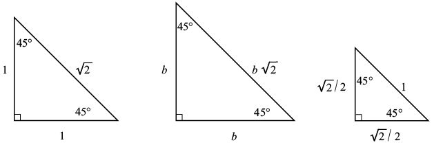
“trigonometry”（三角学）的希腊字根是“trigon”和“metria”，意思是三角形测量。我们先来分析一些经典的三角形。
等腰直角三角形。等腰直角三角形包含一个90°的角，且另外两个角必须相等。也就是说，除直角以外的两个角都是45°（因为三角形的内角和为180°）。因此，我们把等腰直角三角形称为45–45–90三角形。如果两个直角边长为1，根据勾股定理，斜边的长度必然是
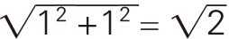
。注意，如下图所示，所有等腰直角三角形的边长比都是1∶1∶ 。
。

30 – 60 – 90三角形。等边三角形的所有边长都相等，所有角都是60°。如下图所示，如果将等边三角形分成两个完全相等的部分，所得到的两个直角三角形的三个内角分别是30°、60°和90°。如果等边三角形的边长为2，直角三角形的斜边长就是2，短直角边的边长是1。根据勾股定理，长直角边的边长为
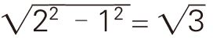
。因此，所有30 – 60 – 90三角形的边长比都是1∶ ∶2（我把它记作1∶2∶）。具体地说，如果斜边长度为1，那么另外两边的长度分别为1/2和 / 2。
∶2（我把它记作1∶2∶）。具体地说，如果斜边长度为1，那么另外两边的长度分别为1/2和 / 2。
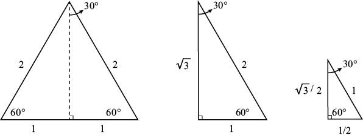
∶2如果正整数a、b和c满足a2 + b2 = c2，那么我们把 (a, b, c) 称为“勾股数”（Pythagorean triple）[2]。勾股数有无穷多个，其中最小、最简单的勾股数是 (3, 4, 5)。当然，我们可以把这个勾股数扩大正整数倍，从而得到 (6, 8, 10)或(9, 12, 15) 或(300, 400, 500) 等勾股数。但是，我们关注的是更有价值的例子。下面介绍一种得到勾股数的方法。取任意正整数m、n，使m＞n。接下来，令
a = m2 – n2 b = 2mn c = m2 + n2
注意，a2 + b2 = (m2 – n2)2 + (2mn)2 = m4 + 2m2n2 + n4= (m2 + n2)2 = c2，也就是说，(a, b, c)是勾股数。例如，如果 m = 2，n = 1，就会得到 (3, 4, 5)。如果(m, n) = (3, 2)，就有勾股数 (5, 12, 13)；如果(m, n) = (4, 1)，就有 (15, 8, 17)；如果 (m, n) = (10, 7)，就有 (51, 140, 149)。令人吃惊的是，所有的勾股数都可以通过这个方法得到（所有数论课程都会证明这个结论）。
三角学建立在两个重要函数的基础之上，即正弦（sine）函数和余弦（cosine）函数。如图所示，已知直角三角形ABC，c表示斜边长度，a、b分别表示∠A、∠B对应直角边的长度。
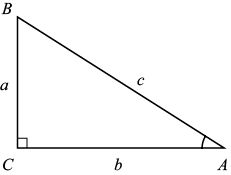
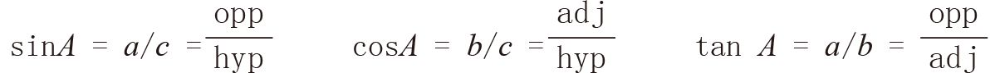
对于角A（由于ABC是直角三角形，该角必然是锐角），我们把∠A的正弦函数（记作sinA）定义为：
sinA =
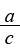
=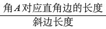
=
同理，我们把∠A的余弦函数定义为：
cosA =
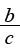
=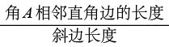
=
（注意，含有角A的所有直角三角形都与原三角形ABC相似，边长的比例关系都相同，因此角A的正弦函数和余弦函数与三角形的大小没有关系。）
除正弦函数和余弦函数之外，三角学中使用最多的函数就是正切（tangent）函数。我们把∠A的正切函数定义为:
tan A =
对于直角三角形，有：
tan A = =
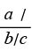
=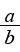
=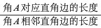
=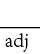
关于正弦、余弦和正切函数，有非常多种记忆方法，最常见的是“SOH CAH TOA”，其中SOH表示正弦为对边（O）/斜边（H），CAH、TOA与之类似。我的中学老师教给我的口诀是“Oscar Has A Heap of Apples”（奥斯卡有一堆苹果），表示正弦、余弦和正切函数分别对应OH、AH和OA。我的朋友对这个口诀进行了修改，把它变成：“Olivia Has A Hairy Old Aunt！（奥莉维亚的姑姑是一个粗鲁的老妇人！）
例如，在下面这个3 – 4 – 5三角形中，有：
sinA =
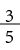
cosA = tan A =
tan A =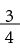
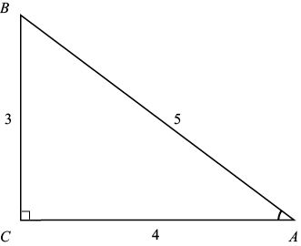
那么，这个三角形的∠B呢？计算角B的正弦与余弦，就会发现：
sinB = = cosA cosB = = sinA
从计算结果可以看出，sinB = cosA，cosB = sinA。这并不是巧合，因为对于∠A而言，另一个锐角的对边和邻边正好与之相反，但是斜边保持不变。由于∠A + ∠B = 90°，对于任意锐角，我们都可以得到：
sin (90°– A ) = cosA cos (90°– A ) = sinA
例如，如果三角形ABC的∠A = 40°，那么它的余角∠B = 50°且sin 50°= cos 40°，cos 50°= sin 40°。换句话说，角B的正弦等于角A的余弦。
除此以外，你们可能还需要记住另外三个函数，不过它们的使用频率低于前三个函数。这三个函数[分别是正割（secant）、余割（cosecant）和余切（cotangent）],它们的定义为：
sec A =
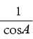
csc A =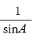
cot A =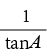
我们可以轻松证明正割与余割、正切与余切之间的关系和正弦与余弦之间的关系相似，也就是说，对于直角三角形中的所有锐角，都有sec (90°– A ) = cscA，tan (90°– A ) = cot A。
学会计算正弦之后，就可以通过余角计算所有角的余弦，进而求出正切和其他三角函数。但是，如何计算正弦呢？比如，40°的正弦是多少？最简单的方法是利用计算器。我的计算器告诉我sin 40°= 0.642…，这个数值是如何计算出来的呢？在本章结尾，我将解释其中的奥秘。
有些三角函数的值需要我们记住，而不需使用计算器。前面已经证明，30–60–90三角形的边长比为1∶ ∶2，因此：
sin 30°= 1/2 sin 60°= / 2
还有：
cos 30°= / 2 cos 60°= 1 / 2
由于45 – 45 – 90三角形的边长比1∶1∶，因此：
sin 45°= cos 45°= 1/ = /2
由于tan A =
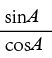
，因此我们只需记住tan 45°= 1和tan 90°不存在（因为cos 90°= 0），而无须记住其他正切函数的值。在利用三角学计算山的高度之前，我们先解决一个简单的问题：计算树的高度。
如下图所示，假设你与树的距离是10英尺，树的顶部与地面形成的仰角为50°。（顺便告诉大家，大多数智能手机都有可以测量角度的应用程序。利用量角器、吸管和回形针等简单工具，也可以制成一个有效的角度测量仪器——测角器。）
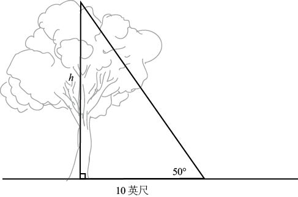
如果树的高度为h，就有：
tan 50°=
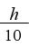
因此，h = 10 tan 50°。利用计算器可以算出它的值为10 ×1.19…≈ 11.9，也就是说树的高度约为11.9英尺。
现在，我们准备利用第四种数学方法，解决前面提出的山高问题。我们面临的难题是，我们不知道自己与大山中心点之间的距离。从本质上看，我们有两个未知因素（大山的高度、大山与我们之间的距离），因此我们需要收集两个信息。如下图所示，假设从我们所在的位置看山顶的仰角是40°，然后背向大山走1 000英尺，这时的仰角变成32 °。接下来，我们利用这些信息来计算山的近似高度。
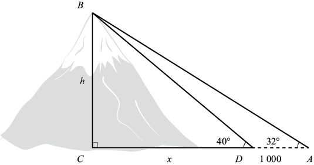
方法4（正切法）：如果山的高度为h，我们最初与大山之间的距离为x（x是 的长度）。观察直角三角形BCD，我们知道tan 40°≈ 0.839，因此：
的长度）。观察直角三角形BCD，我们知道tan 40°≈ 0.839，因此：
tan 40°≈ 0.839 =
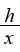
也就是说，h = 0.839x。根据三角形ABC，有：
tan 32°≈ 0.625 =
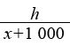
因此，h = 0.625 (x + 1 000) = 0.625x + 625。
从两个等式中消去h，就可以得到：
0.839x = 0.625x + 625
该方程式的解为 x = 625 / (0.214) ≈ 2 920。也就是说，h的近似值为0.839 ×2 920 = 2 450。因此，山的高度约为2 450英尺。